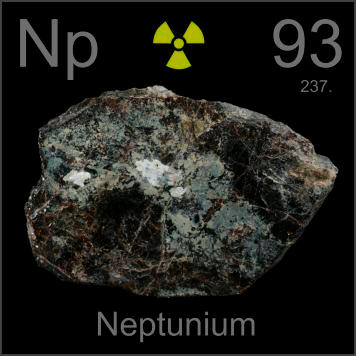

HOME
PREVIOUS
NEXT

Neptunium
Atomic Weight: 237[note]
Density: 20.45 g/cm3
Melting Point: 644 °C
Boiling Point: 4000 °C
Traces of neptunium have been found in uranium minerals like this sample, but not enough that you could ever see it. Neptunium is highly radioactive and has only a few exotic applications in nuclear research.